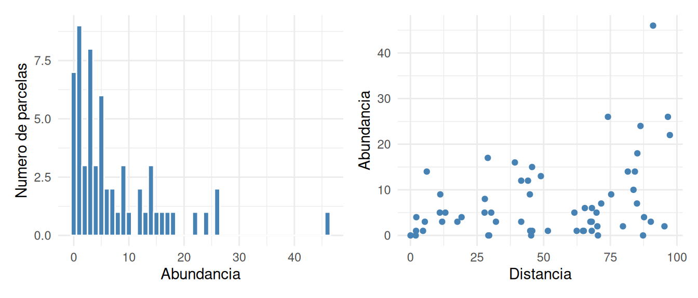
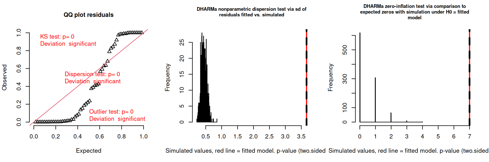
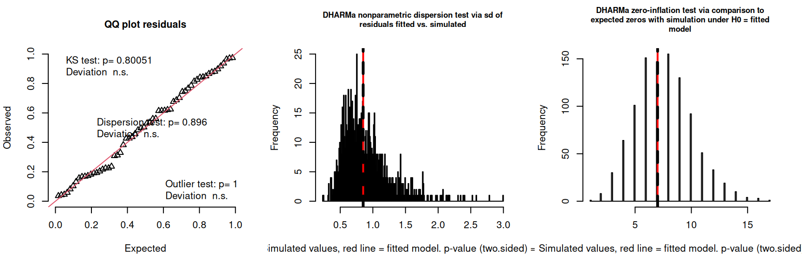

set.seed(2024)
n_demo <- 60
# Distancia: número uniforme entre 0 y 100
demo_distance <- runif(n_demo, min = 0, max = 100)
# Aumento exponencial de la media abundancia esperada con la distancia
demo_mu <- exp(1.0 + 0.015 * demo_distance)
# Abundancia observada simulada a partir de una distribución binomial negativa. La media depende de la distancia (via `demo_mu`). El parámetro `size` controla la dispersión.
demo_abundance <- rnbinom(n_demo, mu = demo_mu, size = 1.2)
demo_data <- tibble(distance = demo_distance, abundance = demo_abundance)Lab 06: Datos de conteos
Modelo lineal generalizado poisson / binomial negativa / inflacion de ceros
Actividad
Preparacion
- Cada estudiante elige una ficha de planta (planta 1, 2, 3 o 4) y modelo:
- Poisson (P)
- Binomial negativa (NB)
- Inflación de ceros (ZIP)
- Binomial negativa con inflación de ceros (ZINB)
Fase 1: Estudiar independientemente [7 minutos]
- Revise los datos para su planta, la histograma y el gráfico de dispersión con respecto a la distancia.
- Tome nota de cualquier patrón que observe, como tendencias en la abundancia con la distancia, presencia de ceros, la variacion en la abundancia, etc.
- Estudia el material proporcionado para el modelo que te toco
- Interpreta los resultados para la planta que te toco de acuerdo con el modelo asignado.
Fase 2: Discusión en grupo [4 minutos]
- Nos unimos en equipos según la planta, para aprender los resultados de los otros modelos para la planta.
- Comparamos nuestras observaciones con las de nuestros compañeros.
- Discutimos cualquier patrón común o discrepancias.
- Preparamos un resumen de nuestras conclusiones en la bitácora para compartir con el grupo.
- Contenido:
- La abundancia cambia con la distancia?
- La estructura de varianza asumida parece apropiada?
- Hay más ceros de los que la dada distribución de conteo puede producir razonablemente?
Fase 3: Presentación y discusión con de mas [3 minutos por grupo]
- El grupo para cada planta presenta su resumen al resto de la clase.
- Contestan dudas planteadas por otros grupos.
- Se discuten las similitudes y diferencias entre los grupos / plantas.
El reporte de Fase 2, escrito en su bitacora, representa su entrada de bitacora calificada
Contexto ecológico
Los ecólogos a menudo estudian la abundancia de diferentes especies de plantas en parcelas a lo largo de un gradiente ambiental. La abundancia de cada especie puede sugerir diferentes patrones de respuesta a las condiciones ambientales:
- Unas especies parecen no afectadas por el gradiente ambiental.
- Otras especies muestran un aumento en la abundancia con el gradiente ambiental.
- Otras más presentan una disminución en la abundancia con el aumento de la presión ambiental.
- Finalmente, algunas especies pueden ser tan afectadas por el ambiente local o la presencia de otros competidores que su abundancia sea muy baja o incluso nula en algunas áreas.
Nuestra tarea es analizar datos de conteo de cuatro especies de plantas en 50 parcelas a lo largo de un gradiente de disturbio ambiental, para entender cómo cada especie responde a los cambios en su entorno. Pero para poder contestar adecuadamente, necesitamos utilizar modelos estadísticos que tengan en cuenta la naturaleza de los datos de conteo y las posibles complicaciones, como la cantidad de variación en la abundancia entre parcelas y la presencia/asusencia de alguna especie en diferentes parcelas. Esto nos permitirá hacer inferencias más precisas sobre los efectos del gradiente ambiental en la abundancia de cada especie.
Datos y paquetes necesarios para reproducir el analisis de las 4 plantas
Datos: Descargar datos (CSV) — una fila por parcela, con la distancia y la abundancia observada de las 4 plantas (columnas
plant_1aplant_4). Son los mismos datos usados en las hojas de caso individuales.Paquetes: para correr el código de este documento se necesitan
dplyr,ggplot2,glmmTMB,DHARMa,ggeffectsypatchwork. Las hojas de caso individuales (una por planta y modelo) usan el mismo conjunto de paquetes.Codigo: pueden empezar con el codigo de ejemplo proporcionado más abajo.
Modelos generalizados lineales para conteos (todos)
Antes de trabajar con los datos de la actividad, veamos paso a paso cómo se ajusta y se interpreta este tipo de modelo.
Datos de ejemplo
Simulamos la abundancia de una especie hipotética en 60 parcelas a lo largo de un gradiente disturbacion ambiendal, representado como la distancia en metros de la area de descanso mas cercana. La abundancia de esta planta tiene con una tendencia positiva con la distancia (prefiere parcelas lejanas a las areas de descanso). Igual los datos muestran sobredispersión – cuando la varianza es mayor que la media, lo que falla las suposiciones de un modelo Poisson:
p_demo_hist <- demo_data |>
ggplot(aes(x = abundance)) +
geom_histogram(binwidth = 1, color = "white", fill = "steelblue") +
theme_minimal() +
labs(x = "Abundancia", y = "Numero de parcelas")
p_demo_scatter <- demo_data |>
ggplot(aes(x = distance, y = abundance)) +
geom_point(color = "steelblue") +
theme_minimal() +
labs(x = "Distancia", y = "Abundancia")
patchwork::wrap_plots(p_demo_hist, p_demo_scatter)
El histograma muestra una distribución de conteos asimétrica hacia la derecha, con varios valores altos infrecuentes. Esto ya sugiere que la varianza podría ser mayor que la media (sobredispersión), algo que un modelo Poisson no puede representar. El gráfico de dispersión sugiere una tendencia positiva con la distancia – las abundancias mas altas se encuentran en las distancias mas grandes.
Paso 1: Ajustar un modelo Poisson
Como primer intento, ajustamos el modelo más simple para datos de conteo: la Poisson, que asume que la varianza es igual a la media.
fit_demo_poisson <- glmmTMB(
formula = abundance ~ distance,
data = demo_data,
family = poisson
)
summary(fit_demo_poisson) Family: poisson ( log )
Formula: abundance ~ distance
Data: demo_data
AIC BIC logLik -2*log(L) df.resid
598.2 602.4 -297.1 594.2 58
Conditional model:
Estimate Std. Error z value Pr(>|z|)
(Intercept) 1.135221 0.122219 9.288 <2e-16 ***
distance 0.015023 0.001785 8.416 <2e-16 ***
---
Signif. codes: 0 '***' 0.001 '**' 0.01 '*' 0.05 '.' 0.1 ' ' 1Cómo leer esta salida:
- Los coeficientes ( columna
Estimate) están en la escala log, porque el modelo Poisson usa un enlace logarítmico (\(\log(\mu) = \beta_0 + \beta_1 \cdot \text{distancia}\)). Para interpretarlos en la escala original de conteos, se exponencian:exp(coef)da el cambio multiplicativo en la abundancia esperada por cada unidad de distancia. - El
Std. Error,z valueyPr(>|z|)permiten evaluar si el efecto de la distancia es distinguible de cero. AIC,BICylogLikson medidas de ajuste relativo, útiles para comparar con otros modelos (como el binomial negativo más abajo).
ggeffects::ggpredict(
fit_demo_poisson,
terms = "distance [0, 20, 40, 60, 80, 100]"
) |>
as.data.frame() |>
select(x, predicted, conf.low, conf.high) |>
knitr::kable(
digits = 2,
col.names = c("Distancia", "Predicho", "IC 2.5%", "IC 97.5%")
)| Distancia | Predicho | IC 2.5% | IC 97.5% |
|---|---|---|---|
| 0 | 3.11 | 2.45 | 3.95 |
| 20 | 4.20 | 3.52 | 5.02 |
| 40 | 5.68 | 5.02 | 6.42 |
| 60 | 7.66 | 6.98 | 8.42 |
| 80 | 10.35 | 9.27 | 11.56 |
| 100 | 13.98 | 11.92 | 16.39 |
Esta tabla traduce los coeficientes (escala log) a la escala de respuesta (abundancia esperada, escala de conteos), junto con un intervalo de confianza del 95%. Es la forma más intuitiva de comunicar las predicciones del modelo.
sim_res_demo_poisson <- DHARMa::simulateResiduals(
fittedModel = fit_demo_poisson,
n = 1000
)
# dividir la area de grafico en tres columnas
par(mfrow = c(1, 3))
# agregar los tres tests de diagnóstico de DHARMa
invisible(DHARMa::testUniformity(sim_res_demo_poisson))
invisible(DHARMa::testDispersion(sim_res_demo_poisson))
invisible(mark_observed_bw(sim_res_demo_poisson, spread_stat(sim_res_demo_poisson)))
invisible(DHARMa::testZeroInflation(sim_res_demo_poisson))
invisible(mark_observed_bw(sim_res_demo_poisson, count_zeros))
¿Qué es un bootstrap paramétrico?
Las pruebas de dispersión e inflación de ceros de DHARMa son bootstraps paramétricos: DHARMa simula muchos conjuntos de datos nuevos asumiendo que el modelo ajustado es correcto, calcula la estadística de interés (dispersión o número de ceros) en cada uno, y así construye la distribución de referencia (histograma gris) contra la que se compara el valor observado (línea punteada). Si el valor observado cae en una zona poco probable de esa distribución simulada, es decir, si se encuentra en los extremos del histograma gris, el modelo no describe bien esa característica de los datos.
Cómo leer los diagnósticos DHARMa:
- El QQ plot (izquierda) compara los residuales simulados con los esperados bajo el modelo ajustado; si el modelo es adecuado, los puntos deberían caer sobre la línea diagonal. El valor p de la prueba KS evalúa desviaciones significativas.
- La prueba de dispersión (centro) compara la varianza observada con la esperada bajo el modelo; un valor p pequeño indica sobredispersión (o subdispersión), es decir, que el modelo Poisson subestima la variabilidad real.
- La prueba de inflación de ceros (derecha) compara la cantidad de ceros observados con los que el modelo esperaría generar; un valor p pequeño sugiere que hay más ceros de los que el modelo puede explicar.
Con estos datos, la prueba de dispersión suele resultar significativa: el modelo Poisson no captura toda la variación en la abundancia. Esto motiva el siguiente paso.
Paso 2: Corregir la sobredispersión con un modelo binomial negativo
El modelo binomial negativo agrega un parámetro de dispersión (\(\theta\)) que permite que la varianza crezca más rápido que la media (\(\text{var} = \mu + \mu^2/\theta\)), sin cambiar la interpretación de los coeficientes de la parte condicional (siguen en escala log).
fit_demo_nb <- glmmTMB(
formula = abundance ~ distance,
data = demo_data,
family = nbinom2
)
summary(fit_demo_nb) Family: nbinom2 ( log )
Formula: abundance ~ distance
Data: demo_data
AIC BIC logLik -2*log(L) df.resid
364.5 370.8 -179.3 358.5 57
Dispersion parameter for nbinom2 family (): 1.06
Conditional model:
Estimate Std. Error z value Pr(>|z|)
(Intercept) 1.22830 0.27108 4.531 5.87e-06 ***
distance 0.01341 0.00445 3.014 0.00257 **
---
Signif. codes: 0 '***' 0.001 '**' 0.01 '*' 0.05 '.' 0.1 ' ' 1Cómo leer esta salida:
- Los coeficientes de
Conditional modelse interpretan igual que en el modelo Poisson (escala log). - La línea
Dispersion parameter for nbinom2(o el valorEstimatebajoSigmaen algunas versiones) es la estimación de \(\theta\): valores pequeños indican mucha sobredispersión; valores muy grandes (cercanos a infinito) indican que el modelo binomial negativo se aproxima al Poisson, es decir, que no hace falta el parámetro extra. - Comparar el
AICde este modelo con el del Poisson anterior: un AIC menor apoya el uso del modelo binomial negativo.
¿Por qué se llama ‘Conditional model’?
glmmTMB etiqueta la parte de conteo (la fórmula principal) como “Conditional model” en todos modelos. El nombre viene de la tradición de modelos mixtos: se refiere a la media de la respuesta condicional a los efectos aleatorios.
Cuando el modelo sí tiene una componente ziformula, esta parte además queda condicional a “no ser un cero estructural” — pero esa es una segunda capa de condicionamiento, propia solo de los modelos ZIP/ZINB.
ggeffects::ggpredict(
fit_demo_nb,
terms = "distance [0, 20, 40, 60, 80, 100]"
) |>
as.data.frame() |>
select(x, predicted, conf.low, conf.high) |>
knitr::kable(
digits = 2,
col.names = c("Distancia", "Predicho", "IC 2.5%", "IC 97.5%")
)| Distancia | Predicho | IC 2.5% | IC 97.5% |
|---|---|---|---|
| 0 | 3.42 | 2.01 | 5.81 |
| 20 | 4.47 | 3.02 | 6.60 |
| 40 | 5.84 | 4.38 | 7.79 |
| 60 | 7.64 | 5.81 | 10.04 |
| 80 | 9.99 | 6.99 | 14.27 |
| 100 | 13.06 | 8.00 | 21.33 |
Los intervalos de confianza tienden a ser más amplios que en el modelo Poisson, que refleja la mayor incertidumbre asociada a datos sobredispersos.
sim_res_demo_nb <- DHARMa::simulateResiduals(
fittedModel = fit_demo_nb,
n = 1000
)
par(mfrow = c(1, 3))
invisible(DHARMa::testUniformity(sim_res_demo_nb))
invisible(DHARMa::testDispersion(sim_res_demo_nb))
invisible(mark_observed_bw(sim_res_demo_nb, spread_stat(sim_res_demo_nb)))
invisible(DHARMa::testZeroInflation(sim_res_demo_nb))
invisible(mark_observed_bw(sim_res_demo_nb, count_zeros))
Con el modelo binomial negativo, la prueba de dispersión ya no debería ser significativa: el modelo ahora representa adecuadamente la variabilidad de los datos.
¿Y si hay exceso de ceros?
Si la prueba de inflación de ceros de DHARMa resulta significativa (más ceros de los que el modelo puede producir razonablemente), se agrega una componente de inflación de ceros con ziformula = ~1 (modelos ZIP o ZINB).
Un modelo con inflación de ceros en realidad combina dos procesos distintos para generar los datos:
- Un proceso binario (binomial/logístico) que decide, para cada parcela, si la especie está estructuralmente ausente — es decir, un cero garantizado, no atribuible al azar de muestreo (por ejemplo, el hábitat es inadecuado o la especie nunca llega a esa parcela).
- Un proceso de conteo (Poisson o binomial negativa) que se aplica a las parcelas que no fueron clasificadas como ausencia estructural. Este proceso genera el número de individuos observados, y — importante — puede producir ceros por puro azar de muestreo, aun cuando la especie sí puede estar presente ahí.
Por lo tanto, los ceros observados en los datos son una mezcla de dos tipos de ceros que el modelo no distingue directamente en los datos crudos, pero sí separa estadísticamente:
- Ceros estructurales: vienen del proceso binomial (parte 1).
- Ceros de muestreo: vienen del proceso de conteo (parte 2), igual que en un modelo Poisson/NB sin inflación de ceros.
Esto se refleja en que el modelo reporta dos conjuntos de coeficientes por separado:
- Los coeficientes del modelo condicional (de conteo, Poisson o NB) están en escala log, igual que antes, y describen cómo cambia la abundancia esperada dado que la parcela no es un cero estructural.
- Los coeficientes de la componente de inflación de ceros (
ziformula) están en escala logit, no log: se interpretan como el logaritmo de la razón de momios de que una observación sea un cero estructural.